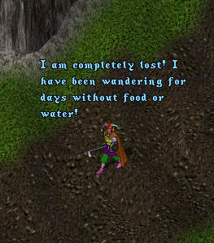
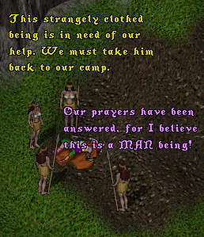

Note from Tryon: As far as we can tell from decifering ancient
manuscripts the name "LBAWHSAMIA" freely translates to something
like "Large Breasted Amazons Who Haven't Seen A Man In Ages".
End of Part 1...Stay 'tooned for next weeks' exciting episode!